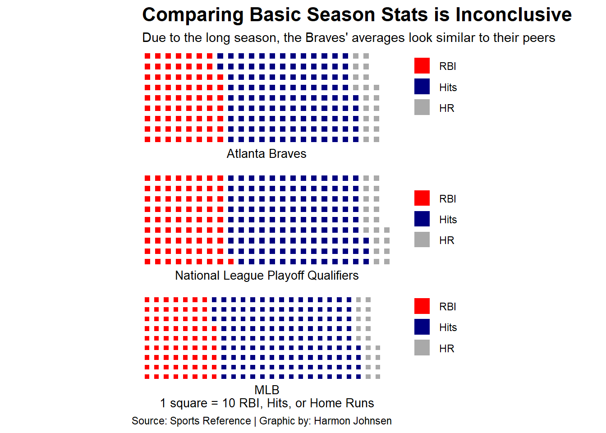
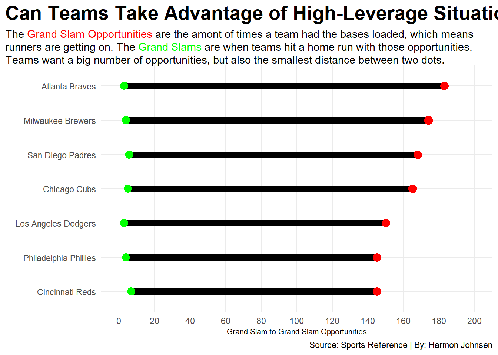

Are Home Runs to Blame for the Atlanta Braves Missing the 2025 Postseason?
baseball
mlb
atlanta braves
Author
Harmon Johnsen
Published
November 17, 2025
The 2025 season was a Major-League disappointment for Atlanta Braves fans. The Bravos snapped a playoff streak that had reached seven seasons, including an improbable World Series title in 2021. But unlike the less-than ideal start in 2021 that led to postseason magic, the year began in the cellar - 0-7 on the road against the Padres and Dodgers (two eventual postseason teams). Yeah… not great.
Many Braves fans constantly complained about the Braves offense being totally reliant on the home run. In fact, there were a lot of complaints about home runs in general from older MLB fans. As the game trends to be optimized for launch angle and longballs, some teams have learned to live and die by a round-tripper. But it begs the question, are the Braves’ home run numbers in 2025 to blame for the lack of meaningful October baseball?
So as the game continues to trend towards the big hit, one might think a team with more home runs qualified over a team with fewer home runs.
Code
library(tidyverse)library(gt)library(ggrepel)library(waffle)library(rvest)library(janitor)library(ggtext)library(ggalt)baseball <-read_csv("team_situational_hitting_25.csv")hr <- baseball |>filter(LG =="NL") |>select(Tm, `All HR`) |>arrange(desc(`All HR`))hr |>gt() |>cols_label(`All HR`="Home Runs", ) |>tab_header(title ="The National League Playoff Qualifiers Were All Over the Board",subtitle ="More home runs did not necessarily guarantee you a playoff spot. Playoff qualifiers are highlighted in gray." ) |>tab_style(style =cell_text(color ="black", weight ="bold", align ="left"),locations =cells_title("title") ) |>tab_style(style =cell_text(color ="black", align ="left"),locations =cells_title("subtitle") ) |>tab_source_note(source_note =md("**By:** Harmon Johnsen | **Source:** Baseball Reference")) |>tab_style(locations =cells_column_labels(columns =everything()),style =list(cell_borders(sides ="bottom", weight =px(3)),cell_text(weight ="bold", size=12) ) )|>tab_style(style=list(cell_fill(color ="darkgray") ),locations =cells_body(rows = Tm =="Los Angeles Dodgers") ) |>tab_style(style=list(cell_fill(color ="darkgray") ),locations =cells_body(rows = Tm =="Chicago Cubs") ) |>tab_style(style=list(cell_fill(color ="darkgray") ),locations =cells_body(rows = Tm =="Philadelphia Phillies") ) |>tab_style(style=list(cell_fill(color ="darkgray") ),locations =cells_body(rows = Tm =="Milwaukee Brewers") ) |>tab_style(style=list(cell_fill(color ="darkgray") ),locations =cells_body(rows = Tm =="San Diego Padres") ) |>tab_style(style=list(cell_fill(color ="darkgray") ),locations =cells_body(rows = Tm =="Cincinnati Reds") ) |>tab_style(style=list(cell_fill(color ="red") ),locations =cells_body(rows = Tm =="Atlanta Braves") )
The National League Playoff Qualifiers Were All Over the Board
More home runs did not necessarily guarantee you a playoff spot. Playoff qualifiers are highlighted in gray.
Tm
Home Runs
Los Angeles Dodgers
244
New York Mets
224
Chicago Cubs
223
Arizona Diamondbacks
214
Philadelphia Phillies
212
Atlanta Braves
190
San Francisco Giants
173
Cincinnati Reds
167
Milwaukee Brewers
166
Washington Nationals
161
Colorado Rockies
160
Miami Marlins
154
San Diego Padres
152
St. Louis Cardinals
148
Pittsburgh Pirates
117
By: Harmon Johnsen | Source: Baseball Reference
If a team qualified for the postseason purely on total home runs, the Braves would have been the final wild card team. But teams don’t qualify for a chance at a World Series purely because they could hit the ball far.
To branch out, now take into consideration total team hits and RBI (runs batted in) to compare to the home run total.
Code
team_standard <-read_csv("team_standard_batting.csv")nl_playoff <- team_standard |>filter(Tm =="Chicago Cubs"| Tm =="Los Angeles Dodgers"| Tm =="San Diego Padres"| Tm =="Cincinnati Reds"| Tm =="Philadelphia Phillies"| Tm =="Milwaukee Brewers")mlb_avg <-c("RBI"=691, "Hits"=1337, "HR"=188)nl_avg <-c("RBI"=734, "Hits"=1190, "HR"=194)braves <-c("RBI"=701, "Hits"=1159, "HR"=190)iron(waffle( braves/10,rows =9,colors =c("red", "navy", "darkgray")) +labs(x="Atlanta Braves",title="Comparing Basic Season Stats is Inconclusive", subtitle="Due to the long season, the Braves' averages look similar to their peers") +theme(plot.title =element_text(size =16, face ="bold"),axis.title =element_text(size =10),axis.title.y =element_blank() ),waffle( nl_avg/10,rows =9,colors =c("red", "navy", "darkgray")) +labs(x="National League Playoff Qualifiers" ),waffle( mlb_avg/10,rows =9,colors =c("red", "navy", "darkgray")) +labs(x="MLB\n1 square = 10 RBI, Hits, or Home Runs",caption ="Source: Sports Reference | Graphic by: Harmon Johnsen" ))

Because of how long the MLB’s season is, there are very few visible differences between the team total and the league average. However, the Braves are above league average in home runs, which further supports that the longball was not the main reason Atlanta missed the playoffs.
How about the players? Atlanta boasted one of the best home run-hitting lineups in the couple of years following the World Series that included Matt Olson, Marcell Ozuna, Austin Riley, and 2023 MVP Ronald Acuna Jr. So was it a down year for the players on the field that contributed to the lack of a playoff trip?
To measure this, lets compare home run totals and an advanced metric called “Baserunners Scored,” which looks at total runners scored by the batter and might not be RBIs. To be highly productive in today’s game, a player wants to have a high home run number and a high “baserunners scored” number, meaning more players come across to score because of what they did as a batter.
Code
players <-read_csv("player_situational_hitting_25.csv")quality <- players |>mutate(Name =gsub("*","", Name, fixed=TRUE)) |>mutate(Name =gsub("#", "", Name, fixed=TRUE)) |>filter(TOTPA >=250)braves <- quality |>filter(Tm =="ATL")hrs <- quality |>filter(All >=50)ggplot() +geom_point(data = quality, aes(x=BRS, y=All), color="lightgray") +geom_point(data = hrs, aes(x=BRS, y=All), color ="blue") +geom_encircle(data=hrs, aes(x=BRS, y=All), s_shape=.05, expand=.05, colour="blue") +geom_text_repel(data = hrs, aes(x=BRS, y=All, label=Name)) +geom_point(data = braves, aes(x=BRS, y=All), color="red") +geom_text_repel(data = braves, aes(x=BRS, y=All, label=Name)) +geom_text(aes(x=70, y=70, label="MVP Contenders"), size=5) +geom_vline(xintercept =41.96108) +geom_hline(yintercept =15.76347) +scale_x_continuous(limits =c(0, 100),breaks =c(0, 10, 20, 30, 40, 50, 60, 70, 80, 90, 100) ) +scale_y_continuous(limits =c(0, 70),breaks =c(10, 20, 30, 40, 50, 60, 70) ) +labs(x="Baserunners scored (when a batter causes the play)", y="Home Runs", title="Is it a Talent Problem at Truist Park?", subtitle="Half of Atlanta's bats were at or below the average when batters cause a run to score (min. 250 PA).", caption="Source: Sports Reference | By: Harmon Johnsen" ) +theme_minimal() +theme(plot.title.position ="plot", plot.title =element_text(size =20, face ="bold"),axis.title =element_text(size =10), plot.subtitle =element_text(size=10), panel.grid.minor =element_blank() )
The Braves players were all about league average among the qualified hitters when it comes to home runs. No one stood out like the MVP candidates. In fact, Nick Allen, the everyday shortstop until Ha-Seong Kim took over at the end of the year, did not go yard this year.
The more concerning number for Braves fans was the “baserunners scored.” Six players were below league average, meaning that those players did not cause as many runners to cross the plate when they were at bat. Two players’ numbers, Ronald Acuna Jr. and Jurickson Profar, should be taken with a grain of salt, since Acuna was hurt for part of the year, and Profar was suspended 80 games for a banned substance.
So maybe this means that home runs prevented the Braves from making the playoffs? If “baserunners scored” just had the runs scored on round-trippers, it might not be pretty for the Braves and their lack of more-than-solo home runs. But this doesn’t solely mean that not leaving the yard kept the Braves from another World Series quest.
The battle could have been lost when the Braves DID get an opportunity to get a big shift in momentum. Enter the most exciting play in baseball (besides a triple play): the grand slam. Nothing gets a crowd more fired up than seeing the loaded bases clear on a home run.
There is another advanced metric that MLB tracks called “grand slam opportunities.” Pretty self explanatory, GSOs are the amount of times a hitter or team had a batter at the plate with the bases loaded. Teams with a big GSO number means that team was loading the bases A LOT! That means that there should be a lot of opportunities to score, thus there should be a lot of opportunities to win games and make the postseason.
So how do the Braves compare to the six NL postseason qualifiers?
Code
nl_advanced <- baseball |>filter(Tm =="Chicago Cubs"| Tm =="Los Angeles Dodgers"| Tm =="San Diego Padres"| Tm =="Cincinnati Reds"| Tm =="Philadelphia Phillies"| Tm =="Milwaukee Brewers"| Tm =="Atlanta Braves")ggplot() +geom_dumbbell(data=nl_advanced, aes(y=reorder(Tm, GSo), x=GS, xend = GSo),colour ="black",colour_x ="green",colour_xend ="red",size =3 ) +scale_x_continuous(limits =c(0, 200),breaks =c(0, 20, 40, 60, 80, 100, 120, 140, 160, 180, 200) ) +labs(x ="Grand Slam to Grand Slam Opportunities",y ="",title="Can You Take Advantage of High-Leverage Situations?", subtitle ="The <span style = 'color:red;'>Grand Slam Opportunities</span> are the amont of times a team had the bases loaded, which means runners are getting on. The <span style = 'color:green;'>Grand Slams</span> are when teams hit a home run with those opportunities. Teams want a big number of opportunities, but also the smallest distance between two dots.",caption="Source: Sports Reference | By: Harmon Johnsen" ) +theme_minimal() +theme(plot.title =element_text(size =18, face ="bold"),axis.title =element_text(size =8), plot.subtitle =element_textbox_simple(), panel.grid.minor =element_blank(),plot.title.position ="plot" )

The Braves had MORE opportunities (183) than all six postseason teams in the National League to hit a grand slam AND had the second most opportunities in the entire MLB (New York Yankees - 189 GSO, 9 GS), but had the worst number (3) in a tie with the World Series Champions, the Los Angeles Dodgers. Meanwhile, the Cincinnati Reds had the least opportunities (145) but the most grand slams (7) in this field. This means the Braves had the bases loaded more than most of the MLB this season, but were only able to capitalize with a grand slam three times.
Could this have kept them out of the postseason? Possibly. Leaving the bases loaded all the time is never good, but remember, this number doesn’t count runs that scored with the bases loaded NOT via the home run. But for the purposes of this argument, I’m going to say that only hitting three grand slams when the only team with more chances than you had nine is a decent factor into the Braves missing the postseason.
Overall, its not black or white if home runs kept the Braves out of the postseason, its more of a gray area. The last chart begins to light the path that maybe stranding baserunners and non-productive outs were a bigger reason why Atlanta missed out on a chance to play in October.
Oh, and there is no mention of the pitching woes from the 2025 season. But that’s a story for another time.